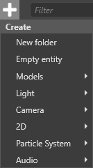
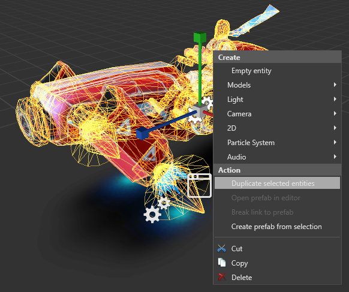

Add entities
Beginner Level Designer
After you create a scene, you need to add entities to your scene to build your level.
Create an entity from the Scene Editor
Above the Entity Tree, click the icon.
The Create menu opens:

Alternatively, right-click the Entity Tree or anywhere in the scene. If you create an entity in the scene, Game Studio adds an entity in the location you click.

Select Empty entity, or select an entity template.
Game Studio adds an entity to the active scene and displays it in the Entity Tree:

Tip
The active scene is the scene entities are added to. To set the active scene, Entity Tree (left by default), right-click the scene and select active scene.

The active scene has no effect on runtime.
Create an entity from an asset
You can add an entity by dragging and dropping an asset from the Asset View to the scene.
Game Studio automatically creates an entity and adds the required component and reference based on the asset you used. For example, if you drag a model asset to the scene, Game Studio creates an entity with a model component with the model asset as its reference.
Note
You can only create entities by dragging assets with corresponding components. For example, model components use model assets, so can be dragged; animations have no corresponding component, so can't be dragged.
Set up a component
Components add special properties to entities that define their purpose in your project. For example, you add lights to your scene by adding Light components to entities, add models by adding model components, and so on. An entity with no component has no purpose.
To add a component to an entity:
Select the entity.
In the Property Grid, click Add component, and add component you want.
Game Studio adds the component.
Set the properties of your new component.
Duplicate an entity
You can duplicate an entity along with all its properties. Duplicating an entity and then modifying the properties of the new entity is often faster than creating an entity from scratch.
Select the entity you want to duplicate.
Hold Ctrl and move the entity with the mouse.
The entity and all its properties are duplicated.
Alternatively, right-click the entity and select Duplicate selected entities.

Rename an entity
- Select the entity and press F2.
- Type a name for the entity, and then press Enter.